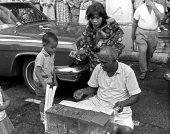

GRYPHON TEA STORY
Gryphon Tea Company traces its origins to a family-owned tea importer founded in Singapore almost 100 years ago. In 2006, a fourth-generation member of the family struck out on his own and the company quickly gained a following for its maverick ideas and heady enthusiasm. Gryphon Tea’s growing selection of tea recipes has received numerous industry awards and is now available to consumers worldwide through online shopping and our network of dedicated distribution partners.

1918
Lim Lam Thye Pte Ltd opens for business to meet the demand for quality Chinese teas in Singapore.
1976
Lim Lam Thye Pte Ltd becomes one of Singapore’s largest tea importers, and remains so today.
2006
Lim Tian Wee, the fourth-generation owner of Lim Lam Thye Pte Ltd, launches Gryphon Tea Company to pursue his twin passions for tea and food.
2007
The company’s first foray overseas as a distribution partner starts supplying our teas to restaurants and cafes in Malaysia.
2010
Launch of the White tea series of two exotic blends incorporating unusual ingredients like Egyptian basil and Thai galangal.
2010
Introduction of the Heritage Art series, a collaboration with the National Heritage Board in which three local artists redesign the company’s tea boxes with a distinctly Singaporean theme.
2011
Launch of a curated collection comprising six floral blends.
2012 – 2013
Our expansion in Asia continues with our teas reaching consumers in Thailand, Japan, Indonesia, Brunei and Vietnam.
2013
Launch of the delicate yet vibrant Rooibos Collection, combining tropical fruits and vegetables with the increasingly popular Rooibos tea.
2014
Our first foothold in Europe with the arrival of our unique Asian tea blends in France.
2015
Reflecting our Asian origins, we launch the Mandarin Collection, two luxurious Oolong blends fit for royal palates.
2015
Gryphon Tea Company pays homage to the nation’s 50th birthday and uses local ingredients to introduce its first limited edition blend, the Singapura Spice.
OUR PHILOSOPHY
Gryphon Tea is a company on a mission to make the highest-quality gourmet teas for the discerning tea drinker who is always in search of new taste experiences. Built with passion and fuelled by our founder’s love for Asia’s rich culinary culture, our tea is crafted with exotic and experimental ingredients to bring out a unique and flavourful pedigree. Each and every blend is a commitment to quality, in which we use only the world's finest tea leaves and herbs. We guarantee a premium tea drinking experience with every sip.
AWARDS
The Great Taste Awards is often referred to as the “Oscars” for food and drink, with 400 judges gathering in the UK each year to select the world’s finest contributions to dining. We have received this award since we first entered in 2008. Several blends from our Artisan Collection - Osmanthus Sencha, Marrakesh Mint, and Pearl of the Orient - are multi-award winners, recognised for their balanced and delicate flavour.